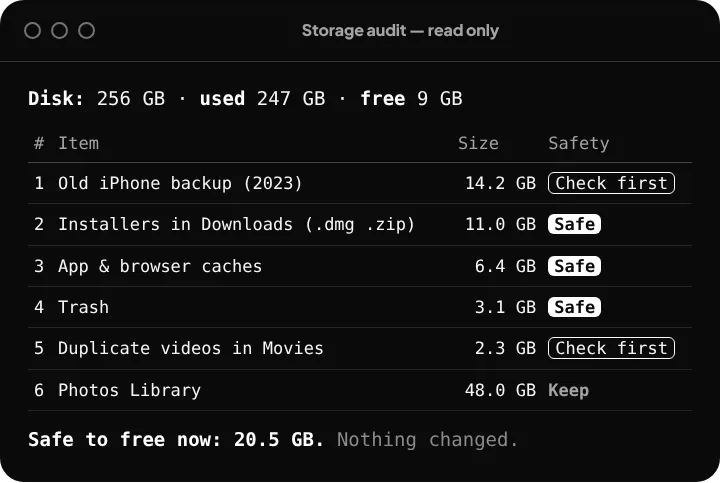
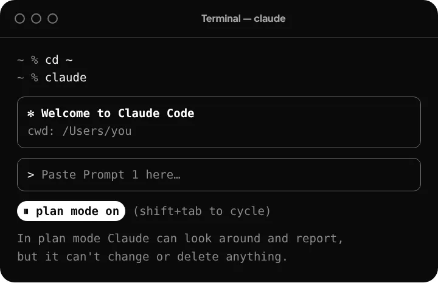

Free up space on your laptop, safely.
- Open the Claude appMac or Windows · go to the Code tab
- Create a project+ New session → Local → pick your home folder → mode Plan
- Paste this promptClaude reports first. Nothing is deleted without your yes.
The prompt
Help me free up storage and make this laptop faster, safely. First check whether it's a Mac or Windows. PART 1 — CHECK-UP (read-only). Do not delete, move, rename or change anything. Look at file names and sizes only, never open my personal files, and skip system folders. Show disk size, used and free space. Find the biggest folders and every file over 500 MB in my user folder, plus the usual space hogs: Downloads, Desktop, Trash or Recycle Bin, app and browser caches, old phone backups, installers (.dmg .pkg .exe .msi .zip), duplicate files, big old videos, and developer leftovers like node_modules, Xcode or Docker. Also list the apps that open at login and the apps using the most memory. Give me ONE numbered table sorted by size: item, location, size, what it is in plain English, and safety (Safe / Check first / Keep). End with how much space I'd get back by removing only the Safe items. Then STOP and wait for me. PART 2 — CLEAN-UP (only after I reply with item numbers). One item at a time, and tell me exactly what you'll do before each action. Move things to the Trash or Recycle Bin, never delete permanently: no rm -rf, del /s or Remove-Item -Force. Use built-in tools when they exist (Storage settings on Mac, Disk Cleanup or Storage Sense on Windows, an app's own "clear cache"). Never touch system folders, installed apps, my Photos library, iCloud/OneDrive/Google Drive folders, password managers or anything marked Keep. If you're unsure, stop and ask. Show the space freed after each item, and free space before vs now at the end. PART 3 — SPEED. Suggest the 5 changes that would make this laptop faster, easiest first, one line each. Change a setting only after I say yes, and tell me how to undo it.
Need help? Full steps
Step 1: Get the Claude app
Download it from claude.ai/download and sign in. Using Claude on your own files needs a paid plan (Pro or higher). Open the app and click the Code tab at the top.
Step 2: Create the project in Plan mode
Click + New session. Under the message box, set the environment to Local and choose your home folder as the project folder. That's the one with your name, inside Users. Then set the mode to Plan. In Plan mode Claude can look and report, but it can't change or delete anything.
Step 3: Paste the prompt, read the check-up
Paste the prompt from the top and press Enter. You'll get one table like this, and nothing changes yet.

Step 4: Say which items to clean
Switch the mode to Manual, so Claude asks before every action. Then reply with the numbers you're happy to remove, for example “2, 3, 4”. Approve each step only after reading it, and say No if you're unsure.
Step 5: Empty the Trash next week
Everything removed is still in your Trash or Recycle Bin. Use your laptop normally for a week. If nothing is missing, empty it to actually get the space back. Run the prompt again every month or two.
Prefer the Terminal?
Install with the command for your laptop, open a new window, type cd ~ and then claude. Press Shift + Tab until you see plan mode on, then paste the prompt.

Mac · Terminal
curl -fsSL https://claude.ai/install.sh | bash
Windows · PowerShell
irm https://claude.ai/install.ps1 | iex
Your safety net
- Plan mode means Claude can only look and report.
- In Manual mode Claude asks before every action. Read it, and say No if you're unsure.
- Everything goes to the Trash or Recycle Bin first, so you can put it back.
- Never approve anything in System, Windows, Program Files or Applications folders.
- Back up first if you can: Time Machine on Mac, File History on Windows.
Example
256 GB laptop with 9 GB free. Slow to start, with apps freezing while you work.
About 30 GB free after clearing old installers, caches, the Trash and an old phone backup. Six apps no longer open at login. Nothing personal touched, and everything stays in the Trash for a week.